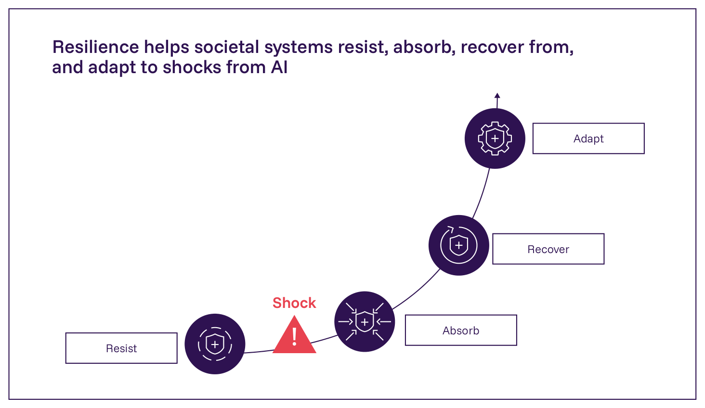
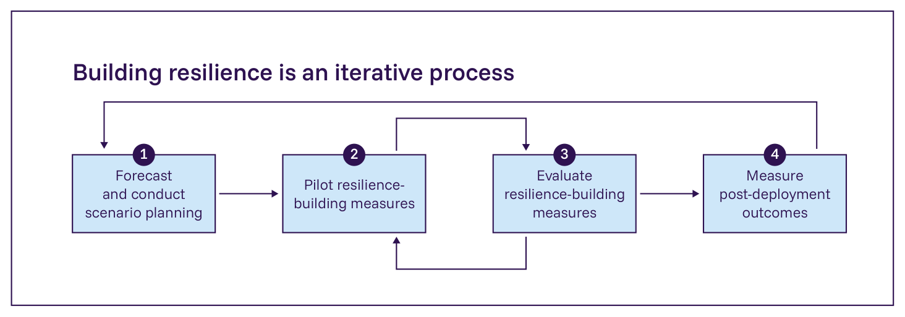
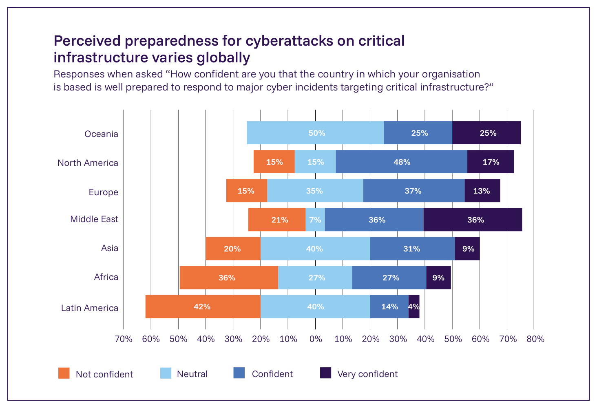

日本語訳

Figure 3.11: レジリエンスの構築は、ショックが起こる前にその可能性または深刻さを減らすこと（抵抗）を含む。ショックが起こった場合、レジリエンス構築措置には、重要な機能を維持することによってショックを吸収すること（吸収）、害と混乱から回復すること（回復）、将来のショックへの脆弱性を減らすこと（適応）が含まれる。出典: International AI Safety Report 2026。レジリエンスを必要とするAI関連のリスクの範囲は、AIを活用した生物・化学攻撃（§2.1.4. 生物・化学リスク 参照）から、労働市場リスク（§2.3.1. 労働市場への影響 参照）のような大規模な社会的課題にまで及ぶ。Table 3.10は、生物・化学攻撃（§2.1.4. 生物・化学リスク 参照）、サイバー攻撃（§2.1.3. サイバー攻撃 参照）、合成メディアと犯罪（§2.1.1. AI生成コンテンツと犯罪活動 参照）、影響力行使と操作（§2.1.2. 影響力行使と操作 参照）、そして多くのリスク分野に適用されうる横断的措置についての、レジリエンス構築措置の例を示している。これらの例は、他の分野からのアプローチがAIレジリエンス戦略にどのように情報を提供できるかを示している。 Table 3.10: 生物・化学、サイバー、合成メディア、影響力行使・操作、横断的リスクについてのレジリエンス構築措置の例
| リスク | 抵抗 | 吸収 | 回復 | 適応 |
|---|---|---|---|---|
| AIを活用した生物・化学攻撃（§2.1.4. 生物・化学リスク 参照） | 危険な遺伝子配列が発注・製造される前にフラグを立てるDNA合成スクリーニングシステム（1084）／行為者を審査する本人確認（KYC）プロトコル（1085） | 攻撃や発生時に生物剤を特定するための接触者追跡、隔離（1369）、早期発見ネットワーク（1370, 1371） | 迅速な対応を可能にするための医療対抗手段（ワクチン、抗生物質、医療機器など）の戦略的備蓄（1372） | 政策協調を促進するための、強化された国際的バイオセキュリティ統治枠組み（1373, 1374） |
| AIを活用したサイバー攻撃（§2.1.3. サイバー攻撃） | アカウント侵害を減らす多要素認証（1375）／攻撃が起こる前に弱点を特定しパッチを当てる定期的な脆弱性評価（1376） | 感染したシステムを隔離しながら、バックアップインフラが重要業務を維持するためのネットワークセグメンテーションと自動システムシャットダウン（1377） | 身代金を支払うことなくエアギャップ保存から侵害された計算システムを再構築するためのオフラインバックアップ復元手順（1378） | サイバーセキュリティ対策を実施するインセンティブ、そして継続的なフィードバックループのための資格のある機関へのインシデント報告（1379） |
| AIを活用した合成メディアと犯罪（§2.1.1. AI生成コンテンツと犯罪活動）、影響力行使と操作（§2.1.2. 影響力行使と操作） | AI生成コンテンツの能力と落とし穴を公衆に知らせる批判的メディアリテラシー（1380）と教育／欺瞞を防ぐための合成コンテンツの開示メカニズム（1381） | プラットフォームの運用を維持しながら合成コンテンツを識別しラベル付けするリアルタイム検知アルゴリズム（1382, 1383） | 合成コンテンツについて顧客、パートナー、メディア、公衆に知らせるための訂正・通知の枠組み（1384） | 無許可または非開示の合成コンテンツを生成または拡散した当事者に責任を負わせる法的責任の枠組み（1385） |
| 横断的 | リスクと影響についての公衆の認識を高める社会教育プログラム（1386, 1387）／展開前にリスクにフラグを立てる第三者監査（1014, 1388, 1389）／社会的影響を予期するシミュレーション（1390, 1391） | 攻撃、誤り、予期しない挙動のいずれからであれ、AIシステムが故障した際に重要な機能を維持するヒューマン・イン・ザ・ループ設計（1392） | 緊急事態後に機能を回復するインシデント対応プロトコル（713, 1374） | リスク配分を再構築し長期的な安全性投資を奨励する保険（1393, 1394）／新しい基準的実践を確立する標準（1395, 1396） |

Figure 3.12: レジリエンスの構築は反復的なプロセスであり、証拠に基づく実施から利益を得る。これは、監視・情勢判断・意思決定・行動（OODA）のフィードバックループによって示されるように、レジリエンス構築措置の予測、試行、評価、そして展開後の成果の測定を含む。出典: Enck, 2012 (1405)。

Figure 3.13: 世界経済フォーラムのGlobal Cybersecurity Outlookからのデータ。57カ国の409人の回答者を対象に、重要インフラを標的としたサイバー攻撃への備えについての認識を調査した。出典: World Economic Forum, 2025 (452)。